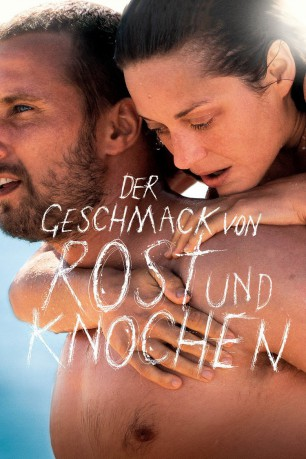
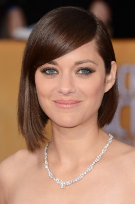
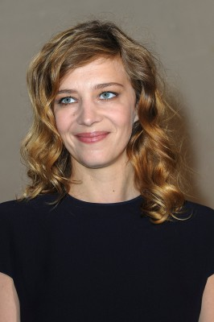
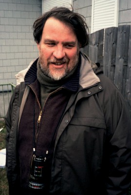
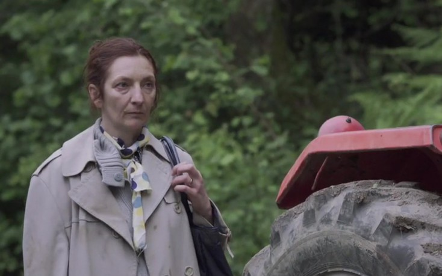

#749 Der Geschmack von Rost und Knochen
Alternativ: Rust and Bone (Englischer Titel)
 
 IMDB-Wertung: 7.5 / 10
IMDB-Wertung: 7.5 / 10  Metascore: 73
Metascore: 73 
Steph geht in ihrem Beruf als Waltrainerin im südfranzösischen Marineland auf. Der bullige Ali, der samt fünfjährigen Sohn bei seiner Schwester Unterschlupf und schließlich einen Job als Türsteher einer Disco gefunden hat, rettet Steph vor einem prügelnden Gast. Danach gehen beide wieder ihrer Wege. Bis Steph bei einem Unfall ihre Beine verliert. Sie nimmt instinktiv Kontakt zu Ali auf, weil er der einzige ist, von dem sie sich erwartet, dass er sie nicht bemitleiden wird.
Jahr: 2012
Dauer: 120 Minuten
FSK: 12
Land: Frankreich Studio: Wild BunchTonspuren:
Untertitel: Deutsch,
Auflösung: 1080p (1920x800) Größe: 8110 MB
Genre: Drama, Liebe
Regisseur: Jacques Audiard
Drehbuch: Jacques Audiard, Thomas Bidegain, Craig Davidson
Soundtrack: Alexandre Desplat
Darsteller:
-  Marion Cotillard als Stéphanie
 Matthias Schoenaerts als Alain van Versch
Matthias Schoenaerts als Alain van Versch-  Céline Sallette als Louise
-  Bouli Lanners als Martial
- Françoise Michaud als La mère de Stéphanie
- Armand Verdure als Sam
-  Corinne Masiero als Anna
- Jean-Michel Correia als Richard
- Mourad Frarema als Foued
- Yannick Choirat als Simon
- Fred Menut als Le patron d'ELP Sécurité
- Duncan Versteegh als Soigneur d'orques
- Katia Chaperon als Soigneuse d'orques
- Catherine Fa als Soigneuse d'orques
- Andès Lopez Jabois als Soigneur d'orques
- Océane Cartia als La baby-sitter
- Irina Coito als La prof d'aérobic
- David Billaud als Le maître-chien
- Fabien L'Allain als Le prothésiste
- Fabien Baïardi als Le dragueur dans la boîte
- Laetitia Malbranque als La femme du supermarché
- Soulyane Rajraji als Le délégué syndical du supermarché
- Pascal Rozand als Le concessionnaire
- Hedi Touihri als Le chef sécurité du supermarché
- Nathalie Millar als La collègue d'Anna
- Anne-Marie Tomat als L'infirmière de l'hôpital près du lac
Datei: X:\2012(G-M)\Geschmack von Rost und Knochen, Der (2012, FSK12, 1920x800).mkv seit 19.03.2015
Festplatte: HD 2012(A-M)
 Es gibt insgesamt 112 Filme in der Gruppe '2012(G-M)'
Es gibt insgesamt 112 Filme in der Gruppe '2012(G-M)'